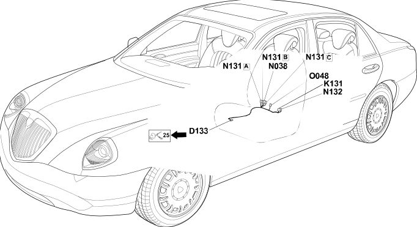

124 left front seat backrest bridge
- Path
- Electrical equipment > Wiring > 124 left front seat backrest bridge
- Kind
- wiring harness
- Applies to
- all engines; all production periods
- Interactive page
- https://sloeber94.github.io/elrnDB-lThss/en/#/838897
Applies to: all engines; all production periods

Topics that link to this page (8)
- D133 Left front backrest cushion coupling(LEFT SEAT)
- K131 Left front seat backrest potentiometer(LEFT FRONT SEAT BACKREST BRIDGE)
- N038 Driver's seat lumbar adjustment motor(LEFT FRONT SEAT BACKREST BRIDGE)
- N131A Left front seat head restraint motor(LEFT FRONT SEAT BACKREST BRIDGE)
- N131B Left front seat head restraint motor(LEFT FRONT SEAT BACKREST BRIDGE)
- N131C Left front seat head restraint motor(LEFT FRONT SEAT BACKREST BRIDGE)
- N132 Left front seat backrest motor(LEFT FRONT SEAT BACKREST BRIDGE)
- O048 Left front backrest heater pad(LEFT FRONT SEAT BACKREST BRIDGE)